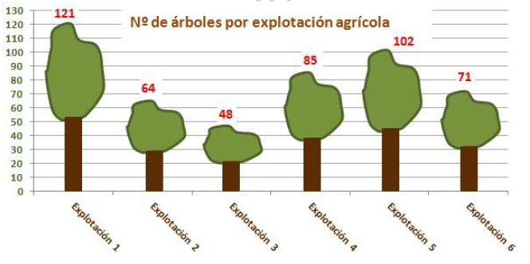
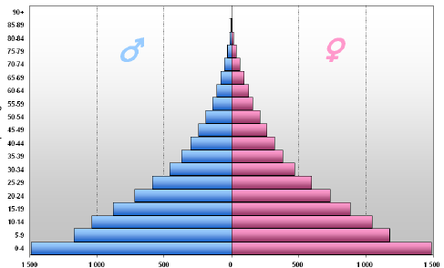
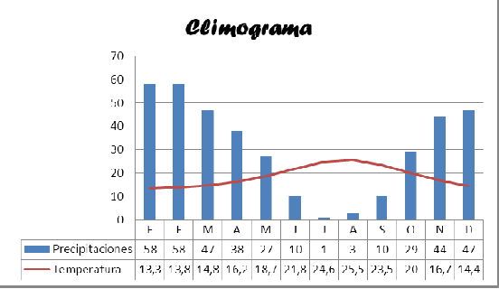

Otras representaciones gráficas.
Existen numerosas técnicas para representar de forma atractiva la información estadística.
Veamos alguno de ellos:
1. Pictograma: utiliza dibujos alusivos a los temas que estamos estudiando haciendo que las dimensiones de l dibujo sea proporcional a la correspondiente frecuencia o repitiendo varios de ellos. Veamos un ejemplo:

Pirámides de población: gráfico de barras dispuestas horizontalmente cuya longitud es proporcional a la cantidad de personas que representa la edad y sexo de la población en cada una de dichas barras. Gráficamente se trata de un doble histograma de frecuencias. Las barras del doble histograma se disponen en forma horizontal, es decir, sobre la línea de las abscisas, y convencionalmente se indican los grupos de edad de la población masculina a la izquierda y los que representan la población femenina a la derecha. A su vez, e n el eje de las ordenadas se disponen e identifican los grupos de edad, por lo general, de cinco en cinco años o llamados quinquenales: (0 a 4, 5 a 9, 10 a 14, etc.), colocando las barras de menor edad en la parte inferior del gráfico y aumentando progresivamente hacia la cúspide las edades de cada intervalo.

Según la forma de la pirámide nos indica si la población es joven (pirámide con mucha base y cada vez más estrecha) típica de los países en vías de desarrollo, o envejecida (pirámide con barras de edades entre 30 y 60 años muy grande) típica de países desarrollados. A veces hay pirámides desequilibradas en un sexo por posibles migraciones de un sexo, guerras u otros motivos.
Diagrama de series temporales: en muchas ocasiones las clases corresponden a diferentes periodos temporales, ordenando las clases según un orden cronológico o uniendo los puntos que relacionan el instante temporal y su frecuencia. Un caso particular y uno de los más importantes son los climogramas: donde las precipitaciones se representan por diagramas de barras y las temperaturas por diagrama de series temporales.
